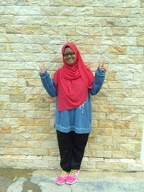

|
My Biography | My Family | My Education | My Experience | My Favourite | My Gallery | |

My name is Nurul Syazwani Binti Sohaimi. This august i will reach 20 years old. I was born on 15, in August month and in very perfect year, 2000. I was born in Hospital Sungai Petani, Kedah. My father name is Sohaimi Bin Ali and my mother name is Che Pian Binti Che Mansor. I have six siblings and i was the second. I have twin called Nurul Syamimi Binti Sohaimi and the rest of my siblings is boy. Mostly my twin and i have the same interest at many kind of thing. But usually we argue at many thing also.
Because although we have many same interest but it only happen to simple thing like food, hobby, and many more. But when include genre in anime, mostly we do not have same thought. We always argue something that relate to story no matter real story or fantasy story. We do not have the same thought at many thing when we in different university. For our thought, it is good experience. I do not admire this phrase very much, "Twin need to be together everytime".
Many people said that twin usually need to be together at almost everytime, but for us do not. For us, twin do not to be together evertime and need to have same interest at anything. We thought that everyone have their own perception so we just let it go. All my family members are Kedah people except my younger brother and my parent. My younger brother and my beloved parent was born in Perak. My first younger brother born in Perak because at that time my mother stay at our grandparent house. This because need help to take care my twin and i. For my thought not easy to take care two baby at one time.
My favourite colour is blue. I love blue colour very much until almost all my thing that i buy was in blue colour. My favourite food is bihun sup and my favourite drink is watermelon juice. I have a lot of hobbies but my current hobby is watching anime. I loves to watch animes that have genre action, adventure, fantasy, magic, school, sport, and slice of life except romance. I quite not loves romance anime. My favourite musics are kpop, light rock, light ballada, and catchy music. Usually my musics comes from Wanna One, Haqiem Rusli, Ernie Zakri and Syamel, Akim and Majistret, and many more. It not like i do not love traditional songs but sometimes i also listen to it. My ambition is to become teacher or lecturer someday.